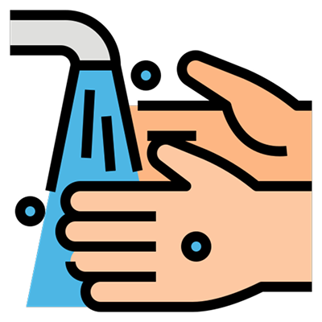
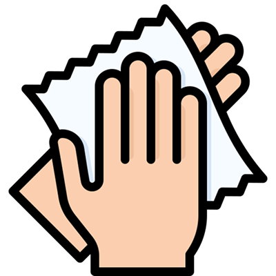
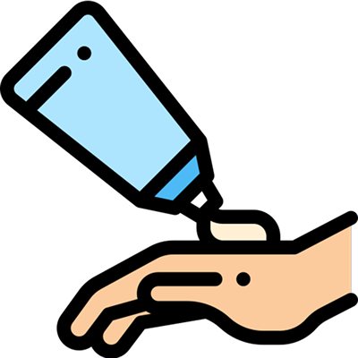
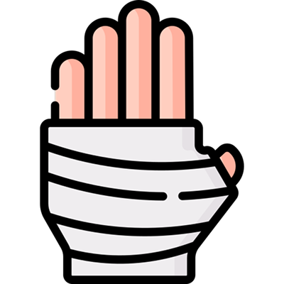
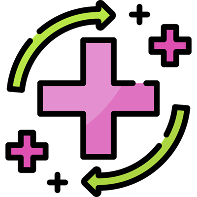

Queimadura Leve

Passo 1 – Resfrie a queimadura
Deixe a área queimada sob água fria corrente por 10 a 20 minutos. Isso ajuda a aliviar a dor e parar o dano na pele.

Passo 2 – Seque com cuidado
Dê leves batidinhas com um pano limpo. Não esfregue.

Passo 3 – Aplique pomada ou gel para queimaduras
Use uma pomada própria para queimaduras (como babosa, por exemplo). Isso ajuda na cicatrização e reduz o desconforto.

Passo 4 – Cubra com gaze ou curativo
Cubra com uma gaze limpa e seca para proteger a área. Não aperte muito.

Passo 5 – Observe a evolução
Fique de olho. A queimadura deve melhorar em alguns dias.